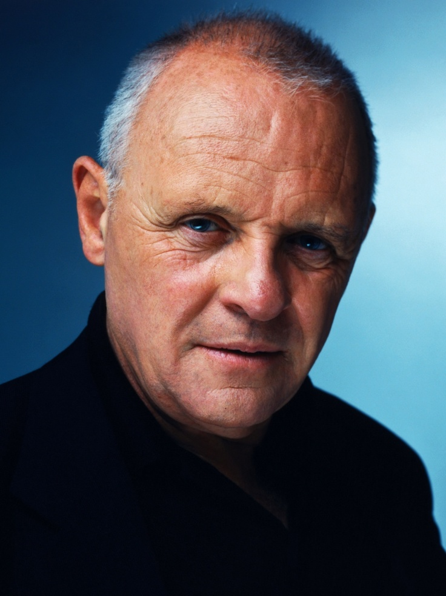

Actor
Anthony Hopkins
Biografia
Philip Anthony Hopkins, conocido como Anthony Hopkins, es un actor, compositor, director, productor, dibujante, escritor, músico y pintor británico. Hopkins nació en Margam, Port Talbot, Gales, un 31 de diciembre de 1937, es hijo de Muriel Anne y Richard Arthur Hopkins. Su madre es pariente lejana del poeta irlandés William Butler Yeats. Se crio en la fe anglicana de la Iglesia de Gales.
Sus épocas de escuela fueron poco productivas. Solitario y con dislexia, se dio cuenta de que podría dedicarse a algún arte, como la pintura, el dibujo o el piano. En 1949, para infundirle alguna disciplina, sus padres insistieron para que asistiera al Jones' West Monmouth Boys' School en Pontypool, Gales. Permaneció allí por cinco períodos y luego asistió al Cowbridge Grammar School en Cowbridge, Gales.
Fue influido y animado por el actor galés Richard Burton para que comenzara su carrera en la actuación. Se habían conocido brevemente a los 15 años de edad. Al final, Hopkins se matriculó en un colegio de música y drama galés en Cardiff, del que se graduó en 1957. Después de un período de dos años en el ejército, se trasladó a Londres, donde continuó su formación en la Academia Real de Arte Dramático.
Trabajos como actor
Sus primeros papeles protagonistas fueron Coriolano (1971) y Macbeth (1972). Su debut en Broadway en 1975, en Equus, le supuso varios premios. En el cine, interpretó a Ricardo Corazón de León, en El león en invierno (1968), de Anthony Harvey.
Reconocimientos
Hopkins confiere a sus personajes un perfil muy distintivo, profundo y psicológico muy elaborado, que los hace muy creíbles. Después de una serie de películas en las que interpretó diversos papeles en los años setenta y ochenta (como Un puente lejano, El hombre elefante y Rebelión a bordo), su carrera se disparó con su papel de Hannibal Lecter, un peligroso e intelectual criminal en la película The Silence of the Lambs de Jonathan Demme, por la cual obtuvo el premio Óscar al mejor actor.
Célebre es también su actuación junto a Emma Thompson en Lo que queda del día de James Ivory, donde interpreta a un primer mayordomo en la mansión de un político inglés afín al Régimen nazi. Por esta actuación fue nominado de nuevo para un Óscar al mejor actor.
En la película Amistad de Steven Spielberg, basada en hechos reales, representa notablemente al expresidente John Quincy Adams, en el papel de un abogado penalista que defiende la causa de un grupo de esclavos acusados de motín y homicidio, en el barco de trata de esclavos Amistad. Siendo nominado de nuevo a los Óscar, esta vez como actor de reparto. En 2019, fue nominado de nuevo en esa misma categoría, por su representación del papa Benedicto XVI en la película de Fernando Meirelles Los dos papas.
Sin embargo, no se le puede encasillar ni definir por estos logros, ya que ha alternado el cine con trabajos teatrales a lo largo de su carrera; ha sido aclamado por la crítica por sus interpretaciones en Drácula, de Bram Stoker (1992, Francis Ford Coppola), Howards End (1992, James Ivory), Tierras de penumbra (1993, Richard Attenborough), Leyendas de pasión (1994, Edward Zwick) y Nixon (1995, Oliver Stone) -por el que fue nominado nuevamente para el Oscar al mejor actor-.
En 2020, protagonizó la película The Father, adaptación de la obra de teatro Le Père (El Padre) de Florian Zeller. La trama gira en torno al personaje de Hopkins, un hombre anciano que debe lidiar con su progresiva pérdida de memoria. 30 años después de ganar el Óscar al mejor actor volvió a hacerse con la estatuilla por este papel, siendo el actor con más edad (83 años en ese momento) en recibirlo.
Hannibal Lecter
Su papel más famoso es el del Dr. Hannibal Lecter, asesino en serie que practica el canibalismo, en The Silence of the Lambs, película por la cual ganó el Óscar al mejor actor en 1992, junto a Jodie Foster, quien hizo el papel de Clarice Starling y también ganó el Óscar a la mejor actriz. Además, esta película ganó los premios Óscar en las categorías Mejor película, Mejor director y Mejor guion adaptado.
Ésta es la actuación principal más breve en ganar un Óscar: Hopkins sólo apareció aproximadamente 17 minutos en pantalla. Repitió su papel como Lecter dos veces más (Hannibal, en el 2001, y Red Dragon, en el 2002). Su representación original del personaje en The Silence of the Lambs mereció el primer puesto, otorgado por el American Film Institute, en la lista de los mejores villanos. En el momento en que le ofrecieron el papel, Hopkins estaba trabajando en una representación teatral de M. Butterfly, en Londres.
La primera aparición de este personaje fue en la película de acción Manhunter (1986), de Michael Mann, la cual se basó sobre todo en la novela El dragón rojo. El personaje de Lecter (pronunciado «lector», en la película) fue encarnado por el actor inglés Brian Cox. Hopkins fue quien se encargó de darle vida al personaje de las tres novelas best-sellers de Lecter escritas por Thomas Harris. Según se sabe, el autor quedó muy contento con la representación hecha por Hopkins de su antagónico personaje. Sin embargo, Hopkins indicó que Red Dragon sería la última película donde protagonizaría al personaje, y que no repetiría como narrador en la última de las secuelas, en realidad una precuela: Hannibal Rising.
Filmografia
- 1968.- El león en invierno
- 1969.- Hamlet (Tony Richardson) 1970.- Las ocho campanadas
- 1971.- When Eight Bell Toll (Etienne Perier)
- 1972.- El joven Winston
- 1973.- Chantaje a una esposa
- 1974.- La chica de Petrovka
- 1974.- El enigma se llama Juggernaut
- 1975.- All Creatures Great and Small (Claude Watham)
- 1977.- Las dos vidas de Audrey Rose
- 1977.- Un puente lejano
- 1978.- Doble triunfo
- 1978.- Magic
- 1980.- Sólo para adultos
- 1980.- El hombre elefante
- 1984.- Motín a bordo
- 1986.- The Good Father (Mike Newell)
- 1987.- La carta final
- 1989.- Adorable seductor (A Chorus of Disapproval, Michael Winner)
- 1990.- 37 Horas desesperadas
- 1991.- El silencio de los corderos
- 1991.- Freejack, sin identidad
- 1991.- Spottswood (Richard Brennam)
- 1992.- Regreso a Howards End
- 1992.- Drácula de Bram Stoker
- 1992.- Chaplín
- 1992.- The Innocent (John Schlesinger)
- 1993.- Lo que queda del día
- 1993.- Tierras de penumbra
- 1994.- El balneario de Battle Creek
- 1995.- El inocente
- 1995.- Leyendas de pasión
- 1995.- Nixon
- 1996.- August (Interpretación y Dirección.)
- 1996.- Sobrevivir a Picasso
- 1997.- Amistad
- 1997.- The Edge
- 1998.- The Mask of Zorro
- 1998.- Meet Joe Black
- 1999.- Titus
- 1999.- Instinct
- 1999.- Siegfried & Roy: The Magic Box [doc]
- 2000.- Mission: Impossible II
- 2001.- Hannibal
- 2002.- Red Dragon
- 2002.- Bad Company
- 2003.- The Human Stain
- 2004.- Alexander
- 2005.- All the King's Men
- 2005.- The World's Fastest Indian
- 2005.- The Legend of Zorro
- 2005.- Proof
- 2006.- Slipstream
- 2006.- Bobby
- 2006.- All the King's Men
- 2006.- Fracture
- 2007.- Shortcut to Happiness
- 2007.- Slipstream
- 2007.- Tony Bennett: The Music Never Ends [doc]
- 2008.- The City of Your Final Destination
- 2010.- The Wolfman
- 2010.- You Will Meet a Tall Dark Stranger
- 2011.- Alfred Hitchcock and the Making of Psycho
- 2011.- Thor
- 2011.- El rito
- 2012.- 360
- 2012.- Hitchcock
- 2013.- The Song of Names
- 2013.- Thor: The Dark World
- 2013.- Red 2
- 2014.- Noé
- 2014.- Kidnapping Freddy Heineken
- 2014.- Solace
- 2015.- Go with Me
- 2016.- Collide
- 2016.- Misconduct
- 2017.- Collide
- 2017.- Transformers: The Last Knight
- 2017.- Thor: Ragnarok
- 2019.- The Two Popes
- 2020.- The Father
- 2020.- Elyse
- 2021.- The Virtuoso
- 2021.- Where Are You
- 2021.- Zero Contact
- 2022.- The Son (Post-Produccion)
- 2022.- Armageddon Time (Post-Produccion)
Televisión
- The Man in Room 17 1965
- A Flea in Her Ear 1967
- Department S 1969
- The Great Inimitable Mr. Dickens 1970
- Danton 1970
- Play for Today 1970, 1974
- Great Performances 1971
- War and Peace 1972, 1973
- Poet Game 1972
- Lloyd George 1973
- Black and Blue 1973
- QB VII 1974
- Possessions 1974
- All Creatures Great and Small 1975
- Dark Victory 1976
- Victory at Entebbe 1976
- Mayflower: The Pilgrims' Adventure 1979
- The Bunker 1981
- Peter and Paul 1981
- Othello 1981
- The Hunchback of Notre Dame 1982
- A Married Man 1983
- Strangers and Brothers 1984
- Arch of Triumph 1984
- Hollywood Wives 1985
- Guilty Conscience 1985
- Mussolini and I 1985
- Screen Two 1987
- Across the Lake 1988
- The Tenth Man 1988
- Great Expectations 1991
- One Man's War 1991
- To Be the Best 1992
- Selected Exits 1993
- American Masters 2007
- The Dresser 2015
- Westworld 2016
- King Lear 2018
- Mythic Quest 2021 / Voz
Vida Privada
Parejas e Hija:
Se ha casado tres veces. Sus primeras dos esposas fueron Petronella Barker (desde 1967 a 1972) y Jennifer Lynton (desde 1973 a 2002). Actualmente, desde 2003, está casado con la colombiana Stella Arroyave. En su primer matrimonio tuvo una hija, Abigail Hopkins (nacida el 20 de agosto de 1968), que es actriz y cantante, con la que no tiene relación.
Filantropia:
Hopkins dedica parte de su tiempo a apoyar a diversos grupos filantrópicos y ha ofrecido su apoyo a distintas organizaciones caritativas, ya sea como presidente de la Fundación Nacional para Lugares de Interés Histórico o Belleza Natural, ya sea recaudando fondos para la preservación del Parque nacional Snowdonia y ayudando a la organización a comprar partes de Snowdonia. Para celebrar tales esfuerzos se publicó un libro, titulado Anthony Hopkins' Snowdonia. Fue invitado de honor en una "Gala Fundraiser for Women in Recovery, Inc.", una organización sin ánimo de lucro de Venice, California que ofrece asistencia para rehabilitar a mujeres drogodependientes. También es maestro voluntario en "Ruskin School of Acting", una escuela de actuación en Santa Mónica (California), donde él vive.
Hopkins ha reconocido ser alcohólico, si bien ha estado sobrio desde 1975. Es conocido por ser bromista en los rodajes, aliviando el humor durante la producción y ladrando como un perro antes de filmar una escena, según declaró en 2007 durante una entrevista con Jay Leno en el The Tonight Show.
Es también miembro del grupo de protección ambiental Greenpeace, a principios de 2008 apareció en una campaña televisiva hablando acerca de la continua caza de ballenas por parte de Japón. Ha sido patrocinador de RAPt, una organización para la rehabilitación de adictos al alcohol, desde sus inicios y ayudó a abrir la primera unidad de ayuda intensiva para adictos al alcohol y las drogas en 1992.
Es admirador del comediante Tommy Cooper. En febrero de 2008, como patrocinador de la Sociedad Tommy Cooper, presentó una estatua conmemorativa en Caerphilly, la ciudad natal de Tommy Cooper. Para la ceremonia, Hopkins donó el fez de Cooper y realizó una actuación cómica.
En su juventud, Hopkins compuso el vals titulado And the waltz goes on ("Y el vals sigue") pero no lo dio a conocer porque se dedicó al mundo del cine. Fue cuando conoció al violinista y director de orquesta neerlandés André Rieu cuando se animó a darlo a conocer, pues decidió que este sería quien tocaría por primera vez su vals, debido a su manera magistral de tocar el violín y dirigir a la Orquesta Johann Strauss. Rieu quedó fascinado al escuchar la pieza. El estreno mundial del vals fue en Viena en julio de 2011 y Hopkins estuvo presente en la gala. Rieu incluyó el vals al repertorio de su álbum titulado bajo el mismo nombre "And the waltz goes on" y lanzado en octubre de 2011, por el que ya recibió Disco de Platino.
Hopkins ha confesado que padece un leve síndrome de Asperger que le fue diagnosticado siendo ya bastante mayor. Sin embargo, confesó sentir alivio al poder entender por qué durante toda su vida ha sido un hombre con tendencia a la soledad